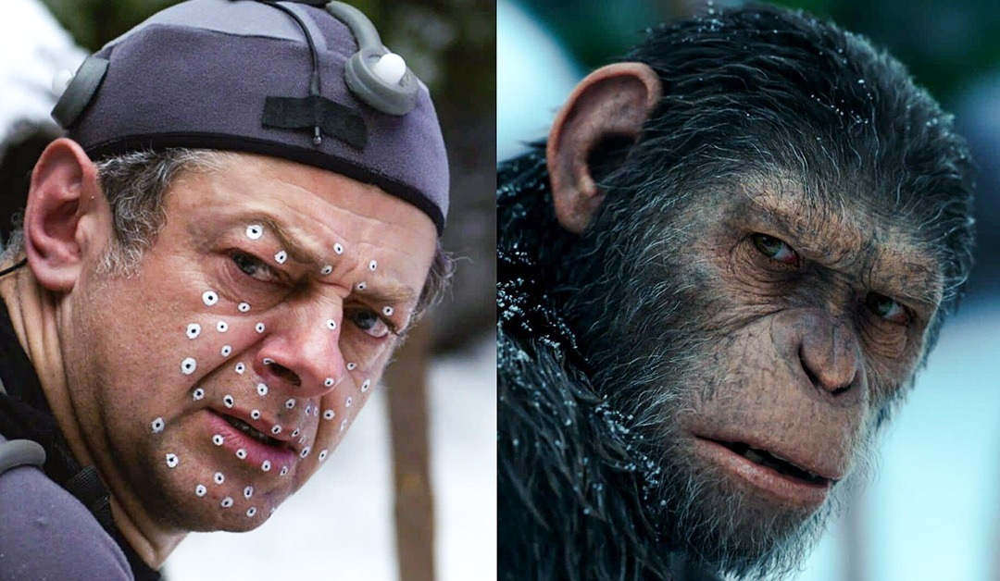

Чому Комп’ютерна графіка — це революція?
Анімація персонажів — це процес створення руху, емоцій, поведінки та характеру героїв у кіно. Вона поєднує художню майстерність, психологію, фізику руху та технології комп’ютерної графіки. Мета анімації — зробити персонажів правдоподібними та емоційно переконливими, незалежно від того, чи вони цілком цифрові, чи поєднані з реальним актором.
 Створення фантастичного світу — один із найскладніших і водночас найважливіших процесів у сучасному кіно. Саме від якості побудованого всесвіту залежить, чи повірить у нього глядач, чи зможе зануритися в історію та емоційно її прожити. Сьогодні режисери, художники, аніматори та спеціалісти з CGI комбінують класичні підходи з високими технологіями, щоб створювати світи, які виглядають реалістично, масштабно та переконливо.
Створення фантастичного світу — один із найскладніших і водночас найважливіших процесів у сучасному кіно. Саме від якості побудованого всесвіту залежить, чи повірить у нього глядач, чи зможе зануритися в історію та емоційно її прожити. Сьогодні режисери, художники, аніматори та спеціалісти з CGI комбінують класичні підходи з високими технологіями, щоб створювати світи, які виглядають реалістично, масштабно та переконливо.
Створення фантастичного світу — один із найскладніших і водночас найважливіших процесів у сучасному кіно. Саме від якості побудованого всесвіту залежить, чи повірить у нього глядач, чи зможе зануритися в історію та емоційно її прожити. Сьогодні режисери, художники, аніматори та спеціалісти з CGI комбінують класичні підходи з високими технологіями, щоб створювати світи, які виглядають реалістично, масштабно та переконливо. Фотореалістична графіка — це один із найскладніших напрямів CGI, мета якого полягає в тому, щоб створені на комп’ютері об’єкти, персонажі та середовища виглядали так, ніби вони зняті камерою в реальному світі. Це вимагає високої деталізації, правильного освітлення, складних симуляцій фізики та точного налаштування матеріалів.
Фотореалістична графіка — це один із найскладніших напрямів CGI, мета якого полягає в тому, щоб створені на комп’ютері об’єкти, персонажі та середовища виглядали так, ніби вони зняті камерою в реальному світі. Це вимагає високої деталізації, правильного освітлення, складних симуляцій фізики та точного налаштування матеріалів.
Фотореалістична графіка — це один із найскладніших напрямів CGI, мета якого полягає в тому, щоб створені на комп’ютері об’єкти, персонажі та середовища виглядали так, ніби вони зняті камерою в реальному світі. Це вимагає високої деталізації, правильного освітлення, складних симуляцій фізики та точного налаштування матеріалів.
© 2025 Комп’ютерна графіка у фільмах | Огородник Сергій 3КН-25б
Джерела інформації ChatGPT